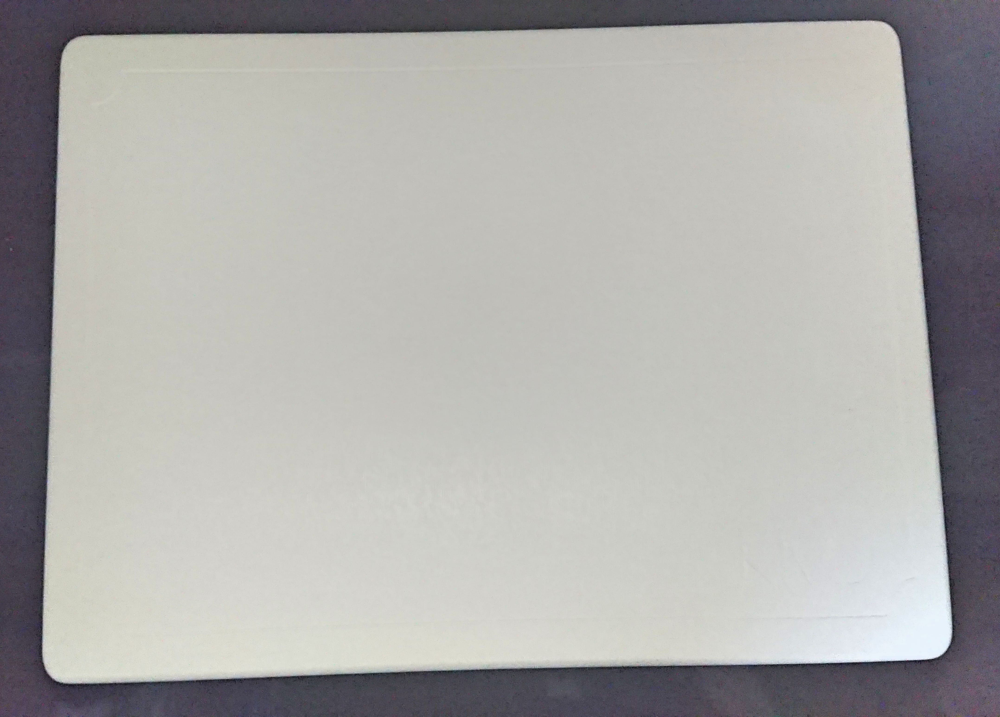

珪藻土マットとは？吸水性に優れた化石のバスマット
このバスマットすごいですよ。
珪藻土（けいそうど）バスマットは物凄い吸水性と通気性を持っています。
その秘密は素材に使われている珪藻土にあります。
この珪藻土とは、藻（水中に生息している緑のもわもわしたやつ）の仲間である珪藻の殻が蓄積し長年かけて化石となったもののことです。
そして珪藻土のもとである珪藻の殻には無数の小さな孔（穴）が開いており通気性にすぐれ、すぐに乾く性質を持っています。
それだけでなく、水分・油分を大量に持っておくことができる性質も持っており水分をものすごいスピードで吸収していきます。
体に付着した水分を素早く吸収し、自身は通気性によりすぐ乾く。このサイクルが速いので珪藻土マットは速く乾くバスマットになっているわけです。
実際に私が使用している珪藻土バスマットの感想とレビューを書いていきたいと思います。
気になる吸水性とは？
お風呂上がり、体を拭いてバスマットに乗りますよね。
体の拭き具合にもよりますが、数回足踏みをすると足の裏はすぐに乾いて驚きます。
お風呂上がりなのに既にさらさらになっているんですよ。えっもう乾いたの！？って感じです。
そのため拭き残しがある状態で床に足をつけてしまい、濡らしてしまうということがなくなりました。
珪藻土バスマットを濡らすと、濡らした部分に濡らした跡が付きます。
使い方的に、足で踏むことが多いので足跡が付きます。
その足跡などの濡れた後を観察してみると、5秒後には薄っすら消えかけ、10秒後にはほとんど消えてなくなります。
すごい通気性だと、眺めていて関心しましたね。
珪藻土はこの吸い込む力の強さで消臭の効果も持っています。
珪藻土自体が独特の匂いを持っていますが、かなり近づかないと匂わないのであまり問題はなかったです。
ただ、最初に買って箱から取り出した時に少し気になりました。
使っていて驚いた点
バスマットを名乗っていますが、実際は板です。
箱を開けた時に何これ？って口に出たのを覚えています。
つまり、これ洗濯機で洗うことができません。
じゃあどうやって洗えばいいのかという疑問にお答えします。
お手入れで長持ちします
箱を開けた時に実はもう一点驚いたことがありまして・・。
実は紙やすりが入っていたのです。
そうです、もうお分かりいただけましたね。
表面の汚れがひどい場合は、この紙やすりで削ることで奇麗にすることができます。
ただ、この紙やすりは最終手段で日々の手入れとしては濡れタオルで拭くのがおすすめです。
紙やすりは汚れを削る以外にも表面の穴が汚れで詰まってしまった場合に吸水力が落ちてしまうのですが、削ることで吸水力が回復します。
そのためなくさずに大切に取っておいてくださいね。
また、風通しのよいところで陰干しをすることでカビを防止することができます。
夏場は1週間に1度、冬場は4日に1度くらいのペースで陰干しするのをおすすめします。
陰干しする際は立てかけて干してください。
カビの防止とは書いてはいますが、私は一度も生えたのを見たことないので安心してくださいね。

他の使用者のレビュー
使った人によるレビューです。
悪いレビューには匂いに関するものが少しありましたね。
ただ、いいレビューに消臭がいいというのも多く意見が分かれていました。
吸水性にかんしては満足する意見が多く見受けられました。
引用元：Amazonレビュー
即乾く、消臭機能もあり衛生的にも良いです。
今まで布のバスマットを使用していたので洗濯の手間や、ダニなどの心配がなくなりました。
柔らかいのに慣れていたのか初めは違和感がありましたが、慣れてしまえば気になりません。またサイズも30×40なので場所もとりません。
使用上不満というほどのことではありませんが、気になった点がいくつかあります。
届いた直後はとても草臭くウエットティッシュで拭き取ってから使用しました。製品の性質上仕方ないとは思います。
次に、レビューには一瞬で乾いてしまうとありましたが使い方の問題かもしれませんが、私の感覚だと30秒くらいかかる気がします。
最後に、取扱説明書に紙ヤスリが入っていると記載してありましたが入っていませんでした。
製品は不満はなく、満足しています。
注意点はある？
絶対にNGなのは長時間水に浸すこと、日光にあてて干すことです。
割れてしまったり、かけてしまったりと劣化や破損の原因となってしまいます。
板なので滑って転倒してしまわないように、付属のすべり止めはつけておくのをおすすめします。
あと、界面活性剤が入っている洗剤をかけてしまうと目詰まりをおこし、吸水できなくなってしまうので注意が必要です。
軽い水洗いややすりで削って濡れたタオルで拭いたりする分には問題なくお手入れできるので、洗剤はやめておいたほうがいいです。
まとめ
最初はなんだこの板と思ったバスマットでしたが、実際に使ってみてよかったのでご紹介させていただきました。
私が購入した珪藻土バスマットはホワイトなのですが、大理石やグリーンなんかの色もおしゃれで気になります。
滑り止めが付いているのも安心で、年配の方やお子様にも安心なのは嬉しいですよね。
このバスマットですが一年間の保証期間がついており、商品に不具合がある場合、満足できなかった場合は商品交換や返品、返金の対応を行ってくれるので安心です。
気になった方は是非お試しください。
こちらのバスタオルと一緒に使うともっとすごいです。

生活の便利グッズまとめ